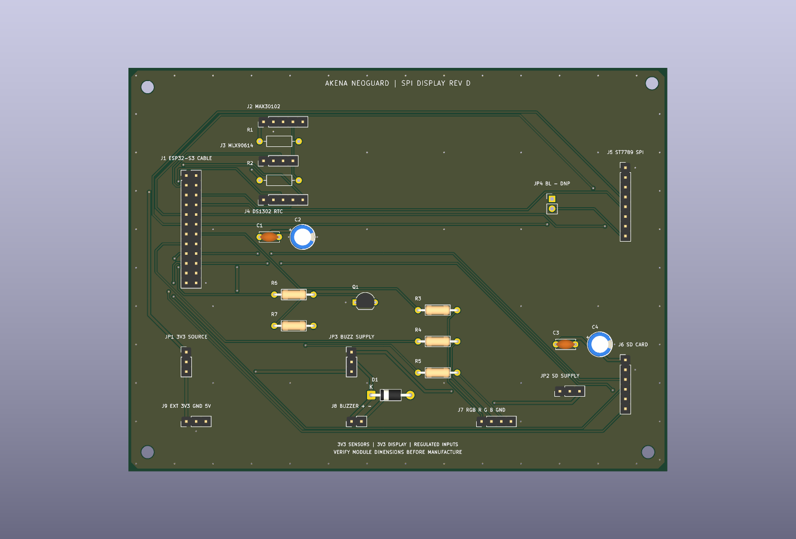
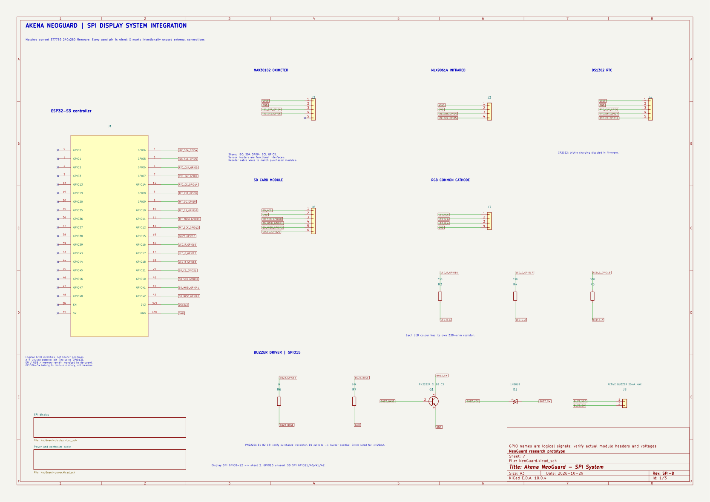
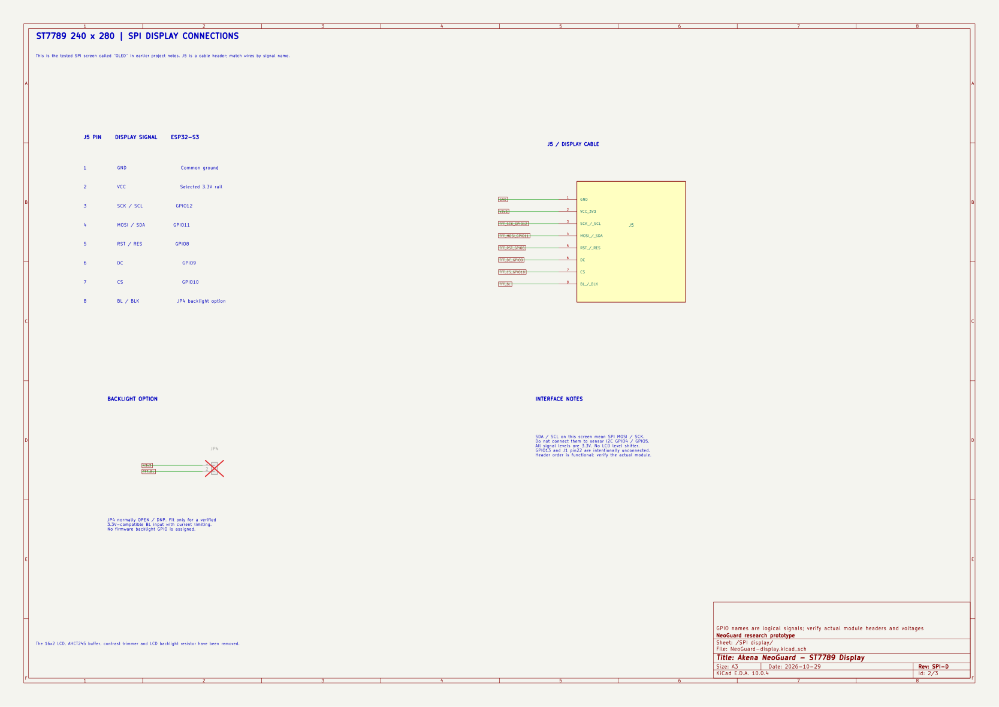
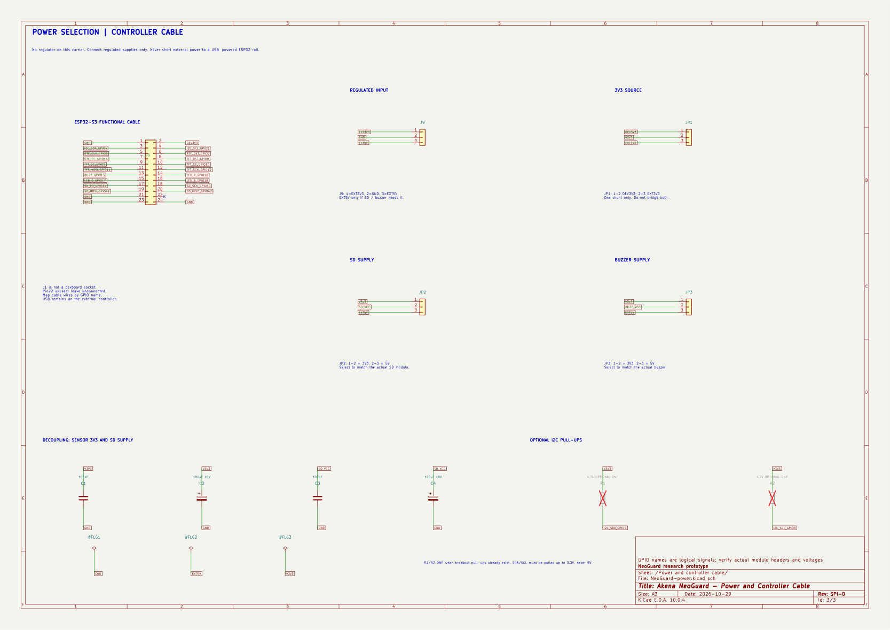

29 October 2026 · ST7789 240×280 · ESP32-S3
Parallel LCD circuitry removed. Used connections match current firmware. Unused ESP32 external pins carry X marks.
Schematic PDF · KiCad project · Portable project · Carrier wiring · Controller pins · Validation
Checks: zero reported ERC/DRC violations, zero unrouted items and zero schematic-parity differences. Physical module fit remains unconfirmed; this is a cable-connected carrier.



